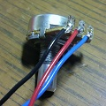
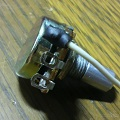
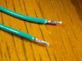
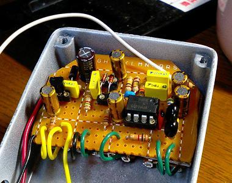
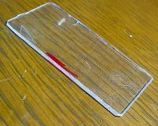

私のエフェクター自作方法【5】配線（基板編）
2008年11月25日 カテゴリー：私のエフェクター自作方法
基板に配線していきます。
と、その前にポットに配線していきます（下写真）。
配線の長さは現物合わせで決めるので先にケースを準備した方がいいです。

線材をポットの端子にからげて半田付けしています。写真のようにシャフトがある側へ向かって配線することが多いです。本当は予備半田（半田あげ）をすべきですが、半田を多めに流すようにすれば問題ないみたいです（今のところ）。

ポットがケース内部で回転してしまう場合、ポットの端子がケースと接触しエフェクターの動作不良を起こします。怪しいところは必ず熱収縮チューブ等で覆って絶縁しておきます。
基板に線材をつけるときには予備半田をしています（下写真）。

基板に半田付けする場合は半田が線材の奥にしみこみにくいので、予備半田をしないと線材がすぐ根元で折れそうになります。
下写真は全ての配線が終わり組み込んでみたところです。

線材は色分けをした方がミスが少なくなると思います。
私はたいてい以下のような色分けです。
入力：白 出力：黄 アース：黒 プラス電源：赤 その他：緑
後から知ったのですが、慣例的には以下の色分けらしいです。
入力：黄 出力：緑 アース：黒 プラス電源：赤 マイナス電源：白
基板とポットの間には下写真のようなものを挟んでいます。

これはCDケースを切ったものです。絶縁体といえばゴムというイメージがありますが、厚紙とかでもかまわないと思います。テープの類は経年変化でベトベトになるものがあるので使わないことにしています。